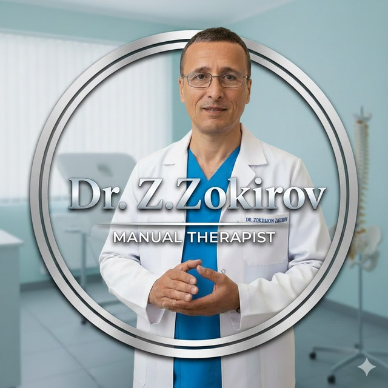

ТАБОБАТ ОЛАМИ БИЛИБ ҚЎЙГАН ЯХШИ: Балиқ ҳақида.
08.04.2026 | Муаллиф: Доктор маслаҳати
Балиқ жонзотлар турига киради ва у ҳаммага маълум махлуқлардандир. Унинг номи ўзбек тилида "балиқ", русчада "рыба", форсийда "моҳий", арабчада "самак" дир. Балиқнинг энг яхшиси жуда катта бўлмаганидир. Оқар сувда, ўт-ўланлар кўп жойда яшовчи балиқлар мақтовга сазовордир.
Балиқ гўшти латиф бўлгани учун тез фасод бўлади. Табиати совуқ ва ҳўлдир. Шўрланган балиқ эса иссиқ ва қуруқдир. Балиқни фақат ўсимлик ёғида қовуриш керак.

Dr.Z.Zakirov💡 Агар касалликларга оид саволларингиз бўлса, юқоридаги тугма орқали Телеграм гуруҳимизга аъзо бўлинг.
КЕЧАГИ ТАОМНИ ИСИТИБ ИСТЕЪМОЛ ҚИЛИШНИНГ ЗАРАРЛАРИ
08.04.2026 | Муаллиф: Доктор маслаҳати
Ҳа, кечаги овқатни иситиб ейишнинг нафақат фойдали, балки жиддий зарарли ва хавфли томонлари ҳам бор. Бу асосан овқатнинг турига, уни қандай сақлаганингизга ва неча марта иситганингизга боғлиқ.
1. Заҳарли моддалар
- Исмалоқ ва лавлаги қайта иситилганда канцерогенга айланиши мумкин.
- Қўзиқорин оқсили ўзгариб, заҳарланиш бериши мумкин.
- Товуқ гўшти иситилганда ҳазм тизимига оғирлик қилади.
2. Бактериал хавф
Гуручда (Паловда) Bacillus cereus бактерияси кўпайиши мумкин. 75°C дан паст иситиш бактерияларни ўлдирмайди.
🇺🇿 Миллий таомлар бўйича таҳлил
🍱 Палов (Ош)
Иситилган ошда крахмал тузилиши ўзгаради ва ҳазм бўлиши қийинлашади. Зиғир ёки пахта ёғи оксидланиб жигарга оғирлик қилади.
🥣 Мошкичири
Кечаги мошкичири кўпинча ичакда газ ҳосил бўлишига (метеоризм) олиб келади. Ошқозони нозик инсонларга тавсия этилмайди.
🍲 Мастава
Ичидаги картошка ва сабзавотлар витамин қийматини йўқотади. Қайта иситилган картошка ошқозон ости безига оғирлик қилиши мумкин.
🌟 Иситишнинг "Олтин қоидалари":
- ✅ Бир марта: Овқатни фақат бир марта иситиш мумкин.
- ✅ Газ плитаси: Микротўлқинли печдан кўра, қозонда иситиш хавфсизроқ.
- ✅ Кўкатлар: Витамин ўрнини босиш учун янги кўкатлар сепиб истеъмол қилинг.
- ✅ Кўк чой: Ёғларни парчалаш учун албатта иссиқ кўк чой ичинг.
⚠️ Муҳим: Агар палов ёки мошкичиридан ғайритабиий ҳид келса ёки устида "ёпишқоқ" суюқлик пайдо бўлган бўлса, уни ҳеч қачон истеъмол қилманг!
Саволларингиз бўлса, мурожаат қилинг:
Dr.Z.Zakirov